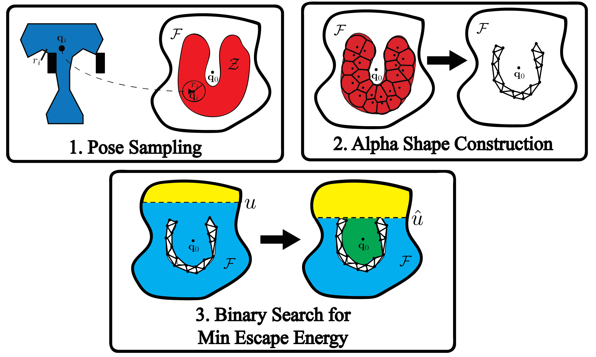

Energy Bounded Caging
Formal Definition and 2D Energy Lower Bound Algorithm Based on Weighted Alpha Shapes
This project is maintained by BerkeleyAutomation
Energy-Bounded Caging: Formal Definition and 2D Energy Lower Bound Algorithm Based on Weighted Alpha Shapes.

Abstract
Caging grasps are valuable as they can be robust to bounded variations in object shape and pose and do not depend on friction.
Full caging is useful but may not be necessary in cases where forces such as gravity are present (consider a stone in a cupped hand).
This paper extends caging theory by defining energy-bounded cages under a constant potential energy field (such as gravity) based on the minimum energy required to escape.
This paper also introduces Energy-Bounded-Cage-Analysis-2D (EBCA-2D), a sampling-based algorithm for planar analysis that takes as input a constant energy field specified as a function over poses, a polygonal object, and a configuration of rigid polygonal obstacles, and returns a lower bound on the minimum escape energy, which can be infinite when the object is fully caged.
Building on recent results in collision detection and the computational geometric theory of weighted $\alpha$-shapes, EBCA-2D is provably-correct and runs in time O(N^2 + N \log(1 / Delta) + N V^3) time where N is the number of samples, Delta is an energy resolution used for binary search, and V is the total number of object and obstacle vertices.
We implemented EBCA-2D and evaluated it with nine parallel-jaw gripper and four nonconvex obstacle configurations across six nonconvex polygonal objects.
We found that the lower bounds returned by EBCA-2D are consistent with intuition and with an RRT* optimal motion planning algorithm that was unable to find escape paths with lower energy.
EBCA-2D required an average of 3 minutes per problem on a single-core processor but has potential to be parallelized in a Cloud-based implementation.
References
- Energy-Bounded Caging: Formal Definition and 2D Energy Lower Bound Algorithm Based on Weighted Alpha Shapes Jeffrey Mahler, Florian Pokorny, Zoe McCarthy, A Frank van der Stappen, Ken Goldberg. IEEE Robotics and Automation Letters, 2016 (To Appear). [PDF] [Supplementary File]
Contributors
This is an ongoing project at UC Berkeley with contributions from:
Jeffrey Mahler, Florian Pokorny, Zoe McCarthy, A Frank van der Stappen, Ken Goldberg
Support or Contact
Please Contact Prof. Ken Goldberg, Director of Automation Sciences Lab at goldberg@berkeley.edu

Interchangeable Surgical Tools by Automation Lab is licensed under a Creative Commons Attribution-NonCommercial-ShareAlike 4.0 International License.